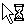
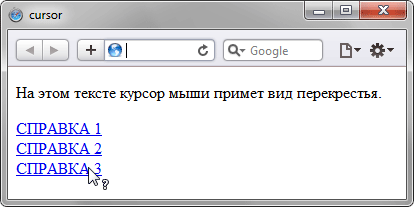

cursor
Устанавливает форму курсора, когда он находится в пределах элемента. Вид курсора зависит от операционной системы и установленных параметров.
Краткая информация
| Значение по умолчанию | auto |
|---|---|
| Наследуется | Да |
| Применяется | Ко всем элементам |
Синтаксис
cursor: [url('путь к курсору'),] | [ auto | crosshair | default | e-resize |
help | move | n-resize | ne-resize | nw-resize | pointer | progress | s-resize |
se-resize | sw-resize | text | w-resize | wait]Значения
- url
- Позволяет установить свой собственный курсор, для этого нужно указать путь к файлу с курсором.
- auto
- Вид курсора по умолчанию для текущего элемента.
Остальные допустимые значения приведены в табл. 1.
| Вид | Значение | Тест | Пример |
|---|---|---|---|
| default | P {cursor: default} | ||
| crosshair | P {cursor: crosshair} | ||
| help | P {cursor: help} | ||
| move | P {cursor: move} | ||
| pointer | P {cursor: pointer} | ||
|  | progress | P {cursor: progress} | |
| text | P {cursor: text} | ||
| wait | P {cursor: wait} | ||
| n-resize | P {cursor: n-resize} | ||
| ne-resize | P {cursor: ne-resize} | ||
| e-resize | P {cursor :e-resize} | ||
| se-resize | P {cursor: se-resize} | ||
| s-resize | P {cursor: s-resize} | ||
| sw-resize | P {cursor: sw-resize} | ||
| w-resize | P {cursor: w-resize} | ||
| nw-resize | P {cursor :nw-resize} |
В зависимости от операционной системы и её настроек вид курсора может отличаться от приведенных в таблице.
При добавлении курсора из файла синтаксис несколько видоизменится.
cursor: url('путь к курсору1'), url('путь к курсору2'), ..., <ключевое слово>
Через запятую допускается указывать несколько значений url, в этом случае браузер попытается открыть первый файл с курсором и если это по каким-либо причинам не получится, перейдёт к следующему файлу. Список обязательно заканчивается ключевым словом, например, auto или pointer, допустимые значения перечислены выше.
Пример
<!DOCTYPE html>
<html>
<head>
<meta charset="utf-8">
<title>cursor</title>
<style>
.cross { cursor: crosshair; }
.help { cursor: help; }
</style>
</head>
<body>
<p class="cross">На этом тексте курсор мыши примет вид перекрестья.</p>
<p>
<a href="help.html" class="help">СПРАВКА 1</a><br />
<a href="help.html" class="help">СПРАВКА 2</a><br />
<a href="help.html" class="help">СПРАВКА 3</a>
</p>
</body>
</html>Результат данного примера показан на рис. 1.

Рис. 1. Применение свойства cursor
<!DOCTYPE html>
<html>
<head>
<meta charset="utf-8">
<title>cursor</title>
<style>
a { cursor: url(images/sniper.cur), pointer; }
</style>
</head>
<body>
<p>Обычный текст</p>
<p><a href="1.html">Ссылка 1</a> <a href="2.html">Ссылка 2</a>
<a href="3.html">Ссылка 3</a></p>
</body>
</html>Объектная модель
Объект.style.cursor
Примечание
Internet Explorer в качестве формата файла курсора поддерживает CUR и ANI. Firefox, Chrome, Safari поддерживают форматы CUR, PNG, GIF, JPG.
Opera не работает с файлами курсора.
Спецификация
| Спецификация | Статус |
|---|---|
| CSS Basic User Interface Module Level 3 | Рабочий проект |
| CSS Level 2 (Revision 1) | Рекомендация |
Браузеры
| Internet Explorer | Chrome | Opera | Safari | Firefox | |
| auto, crosshair, default,move, text, wait, help, n-resize, e-resize, s-resize, w-resize, ne-resize, nw-resize, se-resize, sw-resize | 4 | 1 | 7 | 1.2 | 1 |
| pointer, progress | 6 | 1 | 7 | 1.2 | 1 |
| url() | 6 | 1 | 3 | 1.5 | |
| not-allowed, no-drop,vertical-text, all-scroll, col-resize, row-resize | 6 | 1 | 10.6 | 3 | 1.5 |
| alias, cell, copy, ew-resize, ns-resize,nesw-resize, nwse-resize | 10 | 1 | 10.6 | 3 | 1.5 |
| Android | Firefox Mobile | Opera Mobile | Safari Mobile | |
| auto, crosshair, default,move, text, wait, help, n-resize, e-resize, s-resize, w-resize, ne-resize, nw-resize, se-resize, sw-resize | 1 | 1 | 9.5 | 1.2 |
| pointer, progress | 1 | 1 | 9.5 | 1.2 |
| url() | 1 | 1.5 | 3 | |
| not-allowed, no-drop,vertical-text, all-scroll, col-resize, row-resize | 1 | 1.5 | 10.6 | 3 |
| alias, cell, copy, ew-resize, ns-resize,nesw-resize, nwse-resize | 1 | 1.5 | 10.6 | 3 |